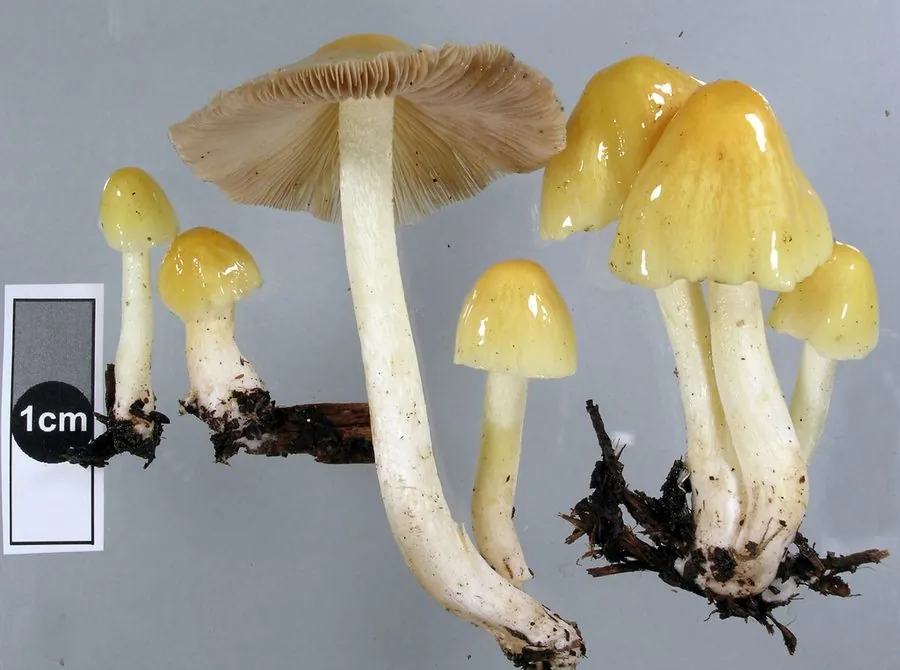

真菌 · 真菌界
粪锈伞 Bolbitius titubans

粪锈伞科小型蘑菇，菌盖鲜黄、脆薄易碎，生于粪堆与腐殖土，寿命仅一两天，无食用价值且不宜食用。
- 分类
- 门担子菌门纲伞菌纲目伞菌目科粪锈伞科属粪锈伞属
- 栖息环境
- 牛马粪堆、腐殖土与堆肥上，雨后快速发生
- 地理分布
- 北半球温带至亚热带广布，中国各地及欧洲、北美常见
- 保护级别
- 暂无评估；种群稳定
物种志
粪锈伞的子实体小型，菌盖直径 1.5–4 厘米，初期卵形，后钟形至平展，表面鲜黄至淡黄色，中央色深，光滑、黏，边缘有明显的细条纹，质地极薄、脆如纸。菌肉薄，黄色。菌褶淡黄后变锈褐色，离生或近离生，密集。菌柄长 4–10 厘米，直径 0.2–0.4 厘米，细弱，黄白色，中空，表面有细粉。孢子印锈褐色。
粪锈伞生于牛马粪堆、腐殖土与堆肥上，春夏秋雨后发生，生长极快，菌盖展开后数小时即萎蔫，寿命通常只有一两天。它无食用价值，且因生于粪便基质、可能携带肠道病菌与寄生虫，不宜采食。虽然它本身不含已知的强烈毒素，但作为粪生菌，仍应避免入口。它对研究蘑菇的快速生长与孢子传播有一定价值，也是堆肥生态中的常见成员。
形态与习性
- 菌盖直径 1.5–4 厘米，鲜黄色，薄脆有细条纹
- 菌褶淡黄后变锈褐色，密集
- 菌柄长 4–10 厘米，细弱中空，黄白色
- 孢子印锈褐色，孢子椭圆形
- 生境粪堆与堆肥，雨后快速发生
- 食用性无食用价值，粪生基质不宜入口
趣味知识
- 粪锈伞从出菇到萎蔫常只有一两天，是寿命最短的蘑菇之一。
- 它的菌盖薄得像一层黄纸，用手指一碰就会碎裂。
- 虽然本身毒性不强，但生于粪便上，可能携带肠道致病菌，绝不能吃。
- 它生长速度惊人，雨后数小时就能从菌蕾长成完整的子实体。